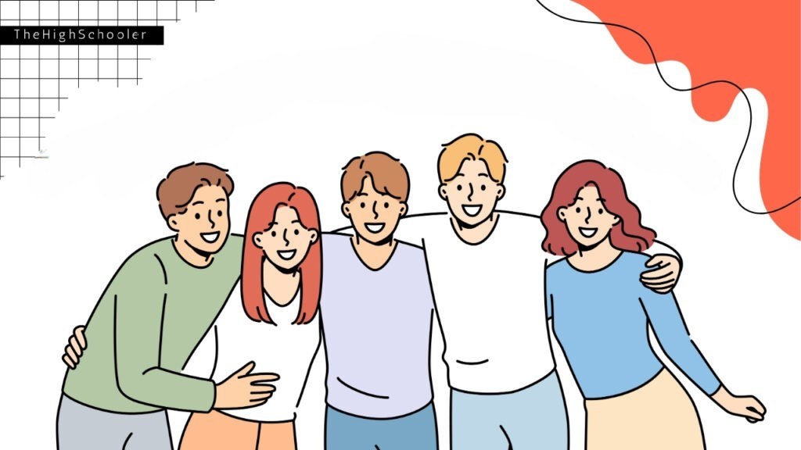

BIOGRAPHY
Childhood

I grew up in a quiet province called Mahayag in Zamboanga del Sur. My parents were away, so I lived with my Lolo and Lola in their simple home. Life there was very peaceful, but honestly, it was quite lonely sometimes. Our house was on a farm, and the neighbors were really far away from us. Because of the distance, it was rare to see other kids my age outside. Most of the time, my only playmates were the cats and dogs in our yard.
The only time our house felt lively was when my cousins came to visit us. One time, I even threw my cousin's slippers away because I didn't want them to go home. I cried so hard that time because I knew that I would get lonely again once they left. But because I was mostly alone, I learned to love the small things. I loved sitting on the porch just watching the chickens eat their food. Feeding the pigs became a daily routine that I actually looked forward to. My favorite bonding moment was going fishing with my Lolo nearby. Sometimes we caught a fish and sometimes we didn't. I also remember a specific season when many butterflies would suddenly appear inside our house. It was such a beautiful sight since there were many butterflies with different colors. When it was almost nighttime, my grandfather and I would walk back home together slowly. As we approached, I could smell the delicious food my Lola was cooking for us. It was sad not having playmates, but looking back, my childhood was truly beautiful.
↑ GO TO TOPTeenage Years
When I was a teenager, high school was full of fun, awkward moments, and unforgettable memories. I remember back in Grade 8, I joined a school pageant just to be exempted from some of my subjects. Walking on that stage was terrifying, and I honestly regretted signing up immediately. My knees were shaking the whole time, and I felt so shy in front of the crowd. However, it remains a fun memory because it was my first time trying something so brave.
High school was very different from the quiet life I had in the province. I made new friends who were loud, crazy, and always ready for fun. We loved hanging out at the canteen during recess just to talk about random things. After school, my friends and I often went to Lemon Square to buy food and play mobile games. We would scream in excitement whenever we won a tough match together. I also remember that I really liked my Science and Math teacher back then. I would always raise my hand during class just to catch her attention. I even studied so hard just so I could answer many of her questions correctly. It makes me laugh now thinking about the effort I made just to impress her. Then, the COVID-19 pandemic suddenly arrived and changed everything for us. It was really sad because I wasn’t able to enjoy the rest of my high school life. We were stuck at home and missed out on many events we were looking forward to. Despite the abrupt ending, I am still grateful for the short time we had together. High school was incomplete, but the memories we made before the lockdown are forever.
↑ GO TO TOPCollege Years

Stepping into college was a confusing time because my plans suddenly changed. I actually wanted to study Nursing to help take care of sick people. But I only applied to two schools, which were PLM and UE, hoping for the best. Sadly, there were no slots left for nursing at PLM, which really broke my heart. Since I had limited options, I decided to enroll at UE instead. I ended up taking Computer Science, a path I never really expected to walk on.
I quickly realized that this course was much harder than I imagined. Programming is not just about typing; it requires deep logic and patience. I remember feeling happy when I wrote my first code, but that was just the start. There are days when I stare at my screen for hours finding a missing semicolon. It is very frustrating when the program has errors and I cannot fix them. I often stay up very late at night just to finish my coding assignments. Sometimes I forget to eat or sleep because I am too focused on the monitor. Thankfully, I met new friends who are also struggling with the same hard subjects. Aside from coding, I also enjoy learning how to design layouts and create wireframes. There are moments when I honestly ask myself if this course is right for me. But every time I finally solve a bug, I feel a rush of excitement. I am learning to accept this new path and not give up on challenges. I know that all these sacrifices and sleepless nights will be worth it someday. Although I didn't become a nurse, I am excited to become a successful developer now.
↑ GO TO TOP